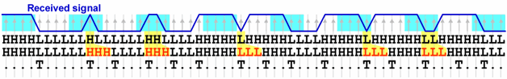

Stretching the pulse
One requirement for the transition tracking to work correctly is that every bit is sampled at least three times (see Drift and transition tracking). Now it is possible that bits are sampled only one or two times not because the DUT is defective, but for other, external, reasons. Examples are cabling loss from the DUT to the test processor input or limited bandwidth of the DUT output driver. For such cases the transition tracker provides the option to stretch the bit by 1 or 2 samples at the expense of the following bit. This will usually improve the signal quality, since shortening of a pulse in the transmission line will usually lead to a corresponding prolongation of the next bit.
One sample bits and two sample bits can be stretched independently. Furthermore, you can select whether you want to stretch the truncated bits to 3 or to 4 samples.
Pulse stretching is configured with the PULSE_STRETCHING_MODE_1BIT and PULSE_STRETCHING_MODE_2BIT properties of TTCF.
Related Test Method APIs
pulseStretchingMode1Bit() and pulseStretchingMode2Bit() functions of the TRANSITION_TEST_PINS API
Example

In this example, both 1 sample and 2 sample bits have been stretched to 3 samples.
Functional changes
- Introduced in SmarTest 7.0.1